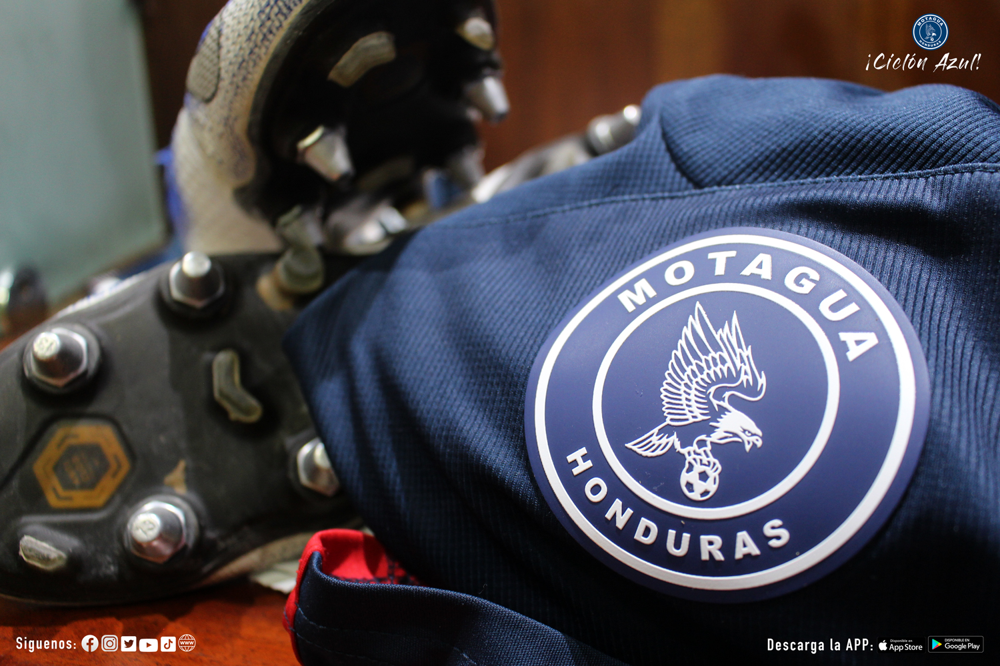
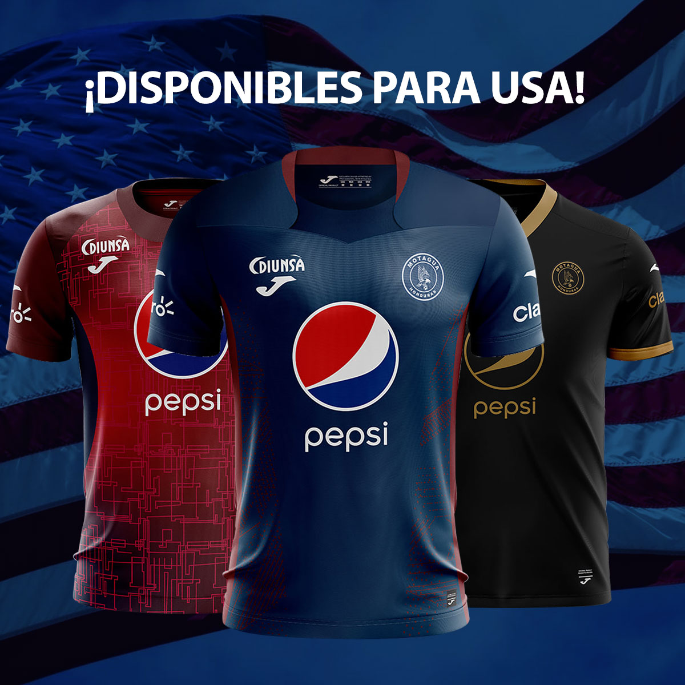

El 29 de Agosto de 1928 comienza la historia del Fútbol Club Motagua, plagada de triunfos y éxitos. En Tegucigalpa surgió como ocurre actualmente en los barrios, el deseo de un grupo de dirigentes de fundar un equipo de fútbol. Fue así que el 29 de agosto de 1928 gracias a la idea del doctor Marco Antonio Ponce secundado por Marco Antonio Rosa, se reunieron en la casa de habitación de doña Martha Velez viuda de Ramos, donde decidieron convocar a una reunión a los socios de los equipos que se habían desintegrado Águila, Clubes América y Honduras Atlética, formando así lo que ahora es el Motagua.

